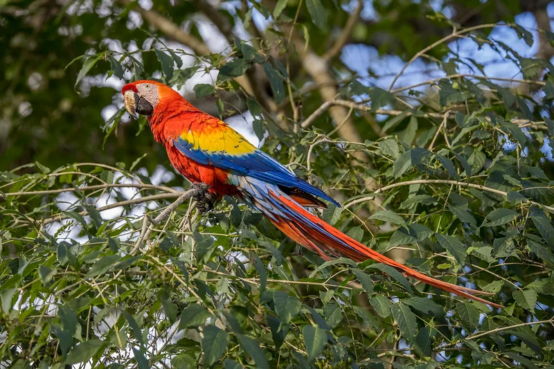

S1Hub, returning player
Species bingo.
Bingo for the things you see outside. Spot it, tap it, get five in a row. Share the link and a friend plays the other card.
Osa wildlife bingo
Corcovado and Golfo Dulce, Costa Rica
Plant bingo
A garden list (placeholder, open question 4)
The Continue row appears only with a game in progress. The Wild & Native lockup sits in the footer (D3).
S2 · S6Game, first visit
How to play
- 1Tap a photo when you spot it. Five in a row wins.
- 2ⓘ shows how to tell it apart.
- 3Share the link from Actions: your friend gets card 2, with none of yours.
⦿ Works offline once loaded. Add it to your home screen on wifi.
The how-to card sits above the grid and never covers it. Step 3 appears only for games with a card pair.
S2 · S5Game, a line won
Keep your distance
These share the forest and the water. Look, log it in your head, and give it room.
- Fer-de-lance · not on the card. The snake to know here. Watch your feet, and never step over a log blind.
- American Crocodile · on the card. Genuinely dangerous. Stay well back from any river or estuary edge.
The card starts at about 22% of the screen, down from 40% today. Below the card sits Osa's one extra section (D5), shortened here.
S3Pattern sheet
Win pattern
This replaces the four chips and the hint line on the main screen. Each pattern shows its shape and the hint. Tapping one selects it and closes the sheet.
S2Actions menu
Today's items keep their order. Below them come How to play (it reopens S6) and the site-wide theme switch (D11).
S4Detail drawer

bird
Scarlet Macaw
Ara macao
Look for the big unmistakable red body with yellow and blue across the wing, and listen first, because the raw scraping squawk usually reaches you before you find the pair crossing the canopy.
They mate for life and you almost always see them in twos, one bird waiting on a branch while the other feeds.
Photo: Charles J. Sharp · CC BY-SA 4.0 · source
Unchanged apart from the theme tokens (D6).
S2 · S8Hunt mode, empty
Tap each species the first time you see it. This list runs the whole trip.
Birds
In Hunt the status row shows progress only. The empty state is one line, not a blocking card.
S7Loading
Squares in the card's exact shape, so nothing shifts when the photos land.
S8Offline, game not cached
Not saved to this phone yet
Open this game once on wifi and it will work offline after that, even in airplane mode.
Each case has one card and one button. Moplants offline adds "Go to Osa", and a bad link offers "All games".
S2 · S8Plant bingo, private mode
Private browsing: your marks won't be kept after you close this tab.
This game has no free centre and no card pair, so the card toggle is gone. The accent is sage. The fourth cell in row two shows a missing photo as the name on paper.
S9How to play page
How to play
Three ways to play
Bingo. A 5×5 card. Tap a cell when you spot it. Pick a win pattern from the status row.
Hunt. Every species on the list, one checklist for the whole trip.
Race. Ten targets each. First to find all of theirs wins; compare finish times.
Win patterns
Playing with a friend
Actions → Copy link. Same seed, same pair of cards: you hold card 1, they hold card 2, and no species is on both.
Offline
Open Osa once on wifi, then add it to your home screen (iPhone: Share → Add to Home Screen; Android: ⋮ → Install app).
About, Credits and Privacy use this same page shell (S10–S12).
S13Share preview in a chat
There is one static image per game, so every seed shows the same preview (D10).